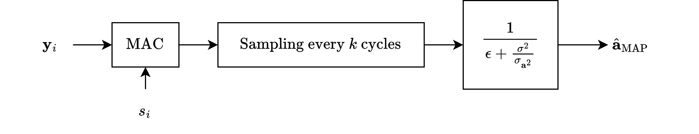
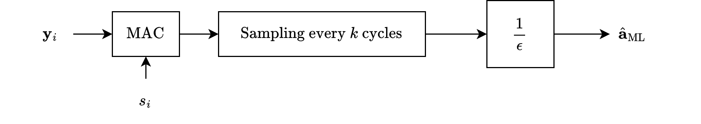

Amplitude Estimation in the Coherent Case with AWGN#
Consider a scenario where the phase of the signal is known during the symbol interval \( T \), and the goal is to estimate the amplitude \( a \).
A typical example of this setup is coherent pulse amplitude modulation (PAM), where the received signal samples are given by:
where:
\( a \) is the amplitude to be estimated (it can be a random variable or an unknown constant),
\( s_i \) represents the transmitted signal values
\( n_i \) denotes additive white Gaussian noise (AWGN)
\( y_i \) is the received signal
Maximum-Likelihood (ML) Estimation#
From previous section, we know that the ML estimate results by finding the solution to
is the first-order condition derived from minimizing the squared error.
It represents the derivative of the squared error function \( \sum_{i=1}^k (y_i - s_i(\alpha))^2 \) with respect to \( \alpha \), the parameter to be estimated.
In the general case, \( s_i(\alpha) \) is a function of the parameter \( \alpha \), and \( \frac{\partial s_i(\alpha)}{\partial \alpha} \) accounts for how the model \( s_i \) changes with \( \alpha \).
In this problem, \( s_i(\alpha) \) is assumed to be linear with respect to \( \alpha \), specifically:
where \( a \) (equivalent to \( \alpha \)) is the unknown parameter to be estimated, and \( s_i \) are fixed signal components (known constants).
This assumption simplifies the derivative \( \frac{\partial s_i(\alpha)}{\partial \alpha} \).
Since \( \partial s_i(\alpha) / \partial \alpha = \partial (a s_i) / \partial a = s_i \), we have:
Substitute \( \frac{\partial s_i(\alpha)}{\partial \alpha} = s_i \) into the general equation:
becomes:
Using the specific form of \( s_i(\alpha) = a s_i \), substitute this into the equation:
This is the equation for the maximum-likelihood estimate in the specific case of amplitude estimation.
Solving the Equation
Solving for \( a \), the ML estimate is:
where: $\( \mathcal{E} = \sum_{i=1}^k s_i^2 \)$ is the symbol energy.
This equation reveals that the ML estimate \( \hat{a}_{ML} \) is essentially the output of a correlator or a matched filter.
These are widely used in communication systems to maximize the signal-to-noise ratio (SNR) for detecting known signals.
Statistical Properties of \( \hat{a}_{ML} \)#
Unbiasedness
The mean of the estimate is:
indicating that \( \hat{a}_{ML} \) is an unbiased estimator.
Variance
The variance of \( \hat{a}_{ML} \) is:
where \( \sigma^2 \) is the noise variance.
We can see that the estimate’s precision improves as the symbol energy \( \mathcal{E} \) increases or the noise variance \( \sigma^2 \) decreases.
Cramér-Rao Bound#
Next, we derive the Cramér-Rao bound (CRB) for this scenario.
Recall that the CRB for the variance of an unbiased estimator \( \hat{a} \) is given by:
Using the same setting in previous Chappter 3, the likelihood function for the observations \( \vec{y} = [y_1, y_2, \ldots, y_k] \) under the AWGN model is:
Taking the logarithm of this likelihood gives the log-likelihood function:
First Derivative of the Log-Likelihood
Differentiate \( \ln p(\vec{y}|a) \) with respect to \( a \):
Simplify:
Second Derivative of the Log-Likelihood
Differentiate again with respect to \( a \):
Since \( \frac{\partial}{\partial a} (y_i - a s_i) = -s_i \), we get:
Simplify:
Expected Value of the Second Derivative
The expected value of the second derivative (i.e., the Fisher information) is:
Substitute this result into the CRB formula:
Simplify:
Define \( \mathcal{E} = \sum_{i=1}^k s_i^2 \) (the symbol energy). Then:
Efficiency of the ML Estimator#
From earlier, the variance of the ML estimate \( \hat{a}_{ML} \) is also:
Since the ML estimator achieves the lower bound, it is efficient.
Thus:
MAP Estimation#
In this section, a MAP estimate assumes that \( a \) is a random variable and can be obtained by selecting an a priori distribution of \( p(a) \).
Recall from previous section, using \(p(\vec{y}|\alpha)\), a MAP estimate to be obtained as the solution to
To proceed further, the form of the signal and the a priori pdf \( p(\alpha) \) (if \( \alpha \) is random) must be known.
Note that this is a general equation for parameter estimation, combining the likelihood term (based on the observations) and the prior term (if the parameter is random).
The prior information is incorporated via \( \ln p(\alpha) \)
We assume that
The parameter \( \alpha \) is represented by \( a \), a random variable.
\( a \) is modeled as a zero-mean Gaussian random variable with variance \( \sigma_a^2 \).
\( s_i(\alpha) = a s_i \), indicating a linear dependence of the signal on \( a \).
Derivative of \( s_i(\alpha) \) with Respect to \( \alpha \) (or \( a \))
We have
Substitute \( \frac{\partial s_i(\alpha)}{\partial \alpha} = s_i \) into the first term:
Log Prior for \( a \)
Since \( a \) is zero-mean Gaussian with variance \( \sigma_a^2 \), its prior pdf is:
The logarithm of the prior is:
The derivative with respect to \( a \) is:
Substitute this into the second term:
Combine the Two Terms
Substituting both results into the original equation gives:
Thus, we have
Solving for \( a \)#
We have that
The first term expands as:
The second term is:
Substitute these into the equation:
Simplify the Equation
Multiply through by \( \sigma^2 \) to eliminate the denominator:
Rearrange terms:
Factor \( a \) on the right-hand side:
Solve for \( a \)
Divide through by \( \sum_{i=1}^k s_i^2 + \frac{\sigma^2}{\sigma_a^2} \):
The maximum a posteriori (MAP) estimate of \( a \) is:
where \( \mathcal{E} = \sum_{i=1}^k s_i^2 \) is the symbol energy.
Thus, we have
We can see that
The numerator \( \sum_{i=1}^k y_i s_i \) represents the correlation between the received signal \( y_i \) and the known signal \( s_i \).
The denominator \( \mathcal{E} + \frac{\sigma^2}{\sigma_a^2} \) combines the symbol energy and the impact of the prior knowledge about \( a \) (its variance \( \sigma_a^2 \)).
 
MSE and MAE Estimations#
A Posteriori Probability
The posterior probability of \( \alpha \) given \( \vec{y} \) is defined by Bayes’ theorem:
Here, \( p(\vec{y}) \) is represented by the constant \( \kappa \), which ensures that \( p(\alpha | \vec{y}) \) integrates to 1.
Substituting the likelihood \( p(\vec{y}|\alpha) \) and assuming Gaussian noise, the posterior becomes:
The prior \( p(a) \) is assumed to be Gaussian, given by:
Substituting this into the posterior expression:
Expand \( \sum_{i=1}^k (y_i - a s_i)^2 \):
Substitute this back into the posterior:
Let \( \mathcal{E} = \sum_{i=1}^k s_i^2 \) (symbol energy), and rewrite the summations:
Group Terms into a Gaussian Form
Combine terms involving \( a \) and \( a^2 \). Note that \( \hat{a}_{MAP} = \frac{\sum_{i=1}^k y_i s_i}{\mathcal{E} + \sigma^2 / \sigma_a^2} \), so the posterior can be rewritten in a Gaussian form.
Combine terms into a quadratic in \( a \):
Factorize the coefficient of \( a^2 \):
Complete the square for \( a \):
where \( \hat{a}_{MAP} = \frac{\sum_{i=1}^k y_i s_i}{\mathcal{E} + \sigma^2 / \sigma_a^2} \).
Final Gaussian Form
The posterior becomes:
where \( \kappa_0 \) is a constant independent of \( a \):
MAP, MSE, and MAE Estimates
Since \( p(a|\vec{y}) \) is Gaussian, the MAP estimate (maximum of the posterior), MSE estimate (mean of the posterior), and MAE estimate (mean of the absolute posterior) are the same. The estimates are:
This result shows that the posterior mean and mode align, making the MAP and MSE estimates equivalent.
Discussion#
Posterior Distribution as Gaussian
The posterior \( p(a|\vec{y}) \) is derived as:
\( p(a) \) is the prior, which is Gaussian:
\( p(\vec{y}|a) \) is the likelihood, which is also Gaussian with respect to \( a \):
When we combine these terms, the posterior \( p(a|\vec{y}) \) takes the form:
Since this posterior is a Gaussian distribution, it is completely characterized by its mean (\( \hat{a}_{MAP} \)) and variance (\( [\frac{1}{\sigma_a^2} + \frac{\mathcal{E}}{\sigma^2}]^{-1} \)).
Equivalence of MAP, MSE, and MAE
The MAP estimate is the value of \( a \) that maximizes the posterior \( p(a|\vec{y}) \). For a Gaussian distribution, the maximum occurs at the mean. Therefore:
The MSE estimate is the value of \( a \) that minimizes the mean squared error:
For a Gaussian posterior, the mean also minimizes the mean squared error. Thus:
The MAE estimate is the value of \( a \) that minimizes the mean absolute error. For a symmetric Gaussian distribution, the mean also minimizes the mean absolute error. Thus:
When \( p(a|\vec{y}) \) is Gaussian, symmetry and unimodality of the Gaussian posterior make the mean, mode, and median identical.
The normalizing constant \( \kappa_0 \) is independent of \( a \) and ensures that the posterior integrates to 1.
While \( \kappa_0 \) is important for computing the full posterior, it does not affect the MAP, MSE, or MAE estimates because these depend only on the mean and variance of the Gaussian posterior.
Thus, since the posterior \( p(a|\vec{y}) \) is Gaussian:
MAP, MSE, and MAE estimates are all equivalent and equal to the mean of the posterior:
import numpy as np
import matplotlib.pyplot as plt
# Parameters
k = 100 # number of samples
sigma = 1 # standard deviation of noise
sigma_a = 1 # standard deviation of prior (MAP)
s_i = np.random.randn(k) # transmitted signal samples
E = np.sum(s_i**2) # symbol energy
# a is a zero-mean Gaussian random variable with variance sigma_a^2
# Generate random amplitudes based on the prior
num_trials = 1000 # number of Monte Carlo trials for simulation
a_true_samples = np.random.randn(num_trials) * sigma_a # true amplitudes sampled from N(0, sigma_a^2)
# Arrays to store estimates
a_ML_samples = []
a_MAP_samples = []
a_MSE_samples = []
a_MAE_samples = []
# Monte Carlo simulation
for a_true in a_true_samples:
# Generate received signal
y_i = a_true * s_i + np.random.randn(k) * sigma
# ML estimate
a_ML = np.sum(y_i * s_i) / E
a_ML_samples.append(a_ML)
# MAP estimate
a_MAP = np.sum(y_i * s_i) / (E + sigma**2 / sigma_a**2)
a_MAP_samples.append(a_MAP)
# Select a random subset of 100 true amplitudes and their corresponding estimates
random_indices = np.random.choice(num_trials, 100, replace=False)
a_true_subset = a_true_samples[random_indices]
a_ML_subset = np.array(a_ML_samples)[random_indices]
a_MAP_subset = np.array(a_MAP_samples)[random_indices]
# Plot the results with the x-axis as the index of trials
plt.figure(figsize=(12, 6))
# Plot estimates against trial index
plt.plot(range(100), a_true_subset, label="True a", marker="o", linestyle=":", color="blue")
plt.plot(range(100), a_ML_subset, label="ML Estimate", marker="^", linestyle=":", color="green")
plt.plot(range(100), a_MAP_subset, label="MAP Estimate", marker="x", linestyle=":", color="red")
# Customize plot
plt.title("Comparison of True Amplitude vs. ML and MAP Estimates")
plt.xlabel("Trial Index")
plt.ylabel("Amplitude")
plt.legend()
plt.grid(True)
plt.show()
Linear and Non-Linear Estimates#
Linear Estimate
An estimate is linear if it is a weighted linear combination of the observed data \( y_i \), without introducing additional terms or nonlinear transformations.
In the given estimate:
the numerator \( \sum_{i=1}^k y_i s_i \) is a linear combination of the observations \( y_i \), and the weights (\( s_i \)) are fixed and independent of \( y_i \).
Thus, the resulting estimate \( \hat{a}_{MAP} \) is linear in \( y_i \).
Effect of Nonzero Mean for \( a \)
If the prior mean of \( a \) is nonzero (e.g., \( E[a] = \mu_a \)), the prior pdf changes from a zero-mean Gaussian to:
The MAP estimate then incorporates the mean \( \mu_a \) as a constant term:
This modification introduces a constant offset (\( \mu_a \)), which is independent of the observations \( y_i \).
Nonlinearity is Introduced
When the prior mean \( \mu_a \) is nonzero, the estimate includes the additive term \( \mu_a \), making it no longer purely a linear combination of \( y_i \).
This is because the offset term \( \mu_a \) does not depend on \( y_i \), breaking the strict linearity.
Properties of the Estimation#
We focus on the bias of the MAP estimate and how it behaves under certain conditions, particularly at high signal-to-noise ratio (SNR), resulting asymptotically unbiased.
we have that the MAP estimate for \( a \) is given by:
Taking the expectation \( E\{\hat{a}_{MAP}\} \):
From the observation model \( y_i = a s_i + n_i \), we know:
so:
Substitute this into the expression for \( E\{\hat{a}_{MAP}\} \):
Bias of the MAP Estimate
The bias of an estimate is defined as:
Here:
The term \( \frac{\mathcal{E}}{\mathcal{E} + \sigma^2 / \sigma_a^2} \) is always less than 1, so \( \hat{a}_{MAP} \) is biased unless \( E\{a\} = 0 \).
The bias depends on the signal-to-noise ratio (SNR).
Asymptotic Unbiasedness at High SNR
The signal-to-noise ratio (SNR) is defined as \( \mathcal{E} / \sigma^2 \). Rewriting the denominator in the MAP estimate:
When \( \mathcal{E} / \sigma^2 \gg 1 / \sigma_a^2 \) (i.e., high SNR), the term \( \frac{\sigma^2}{\mathcal{E} \sigma_a^2} \) becomes negligible, and the denominator simplifies to:
Thus, the MAP estimate becomes approximately:
This is equivalent to the ML estimate, which is unbiased.
Therefore, as \( \mathcal{E} / \sigma^2 \to \infty \), the MAP estimate becomes asymptotically unbiased.
Estimating Structures#
The MAP and ML estimating structures, are depicted in Figures 11.2 and 11.3 [B2], respectively.

The MAP estimate is
The ML estimate is:
Note that both structures are linear and differ only in the final gain factor.
Continuous Forms#
The continuous form of the ML estimate can be obtained as
where
Similarly, a continuous form of the MAP estimate can be obtained as